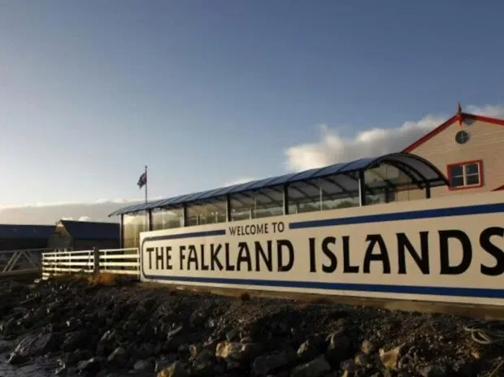
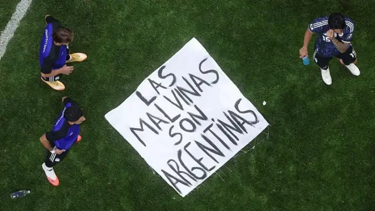

A reação kelper e britânica à bandeira das Malvinas
Os legisladores das ilhas escreveram à FIFA. O governo britânico respondeu. Um ministro falou na BBC. E até um veterano da guerra de 1982 pediu sanções. Repassamos, com nomes e citações textuais, como a Grã-Bretanha viveu a bandeira que os jogadores argentinos ergueram em Atlanta.

Malvinas — Relatório GLOBALpatagonia
A bandeira com a frase “Las Malvinas son argentinas” (“As Malvinas são argentinas”) que os jogadores da Seleção ergueram em Atlanta no dia 15 de julho, após vencer a Inglaterra por 2 a 1 na semifinal da Copa, não se apagou com o apito final. Semanas depois, enquanto a FIFA ainda delibera sobre o que fazer, a carta que um grupo de legisladores das ilhas enviou ao órgão é a prova de que, nas ilhas e em Londres, o gesto ainda incomoda.
A carta dos ilhéus à FIFA
O semanário Penguin News, o jornal das ilhas, revelou que membros da Assembleia Legislativa das Malvinas (MLA) escreveram uma carta aberta à FIFA pedindo sanções disciplinares contra os jogadores argentinos. Classificaram o gesto de “insensitive” —insensível— e argumentaram:
“It is the avowed policy of the Falkland Islands Government that we do not wish to see politics being brought into sport”
(“É política declarada do Governo das Ilhas Falkland que não desejamos ver a política ser trazida para o esporte”)
O argumento dos legisladores apela, mais uma vez, à autodeterminação: a vontade da população das ilhas de continuar sendo um Território Britânico Ultramarino. É o mesmo argumento repetido desde o referendo de 2013, quando 99,8% dos eleitores —menos de 1.400 pessoas— optaram por manter o vínculo com a Coroa.


Fala o governo britânico
O reclamo não ficou restrito às ilhas. O porta-voz do primeiro-ministro britânico, Keir Starmer, saiu para marcar posição diante da imprensa:
“The World Cup might not be ours, but the Falkland Islands definitely are”
(“A Copa do Mundo pode não ser nossa, mas as Ilhas Falkland definitivamente são”)
E acrescentou a fórmula de sempre: “Self-determination rests with the islanders and our commitment to the Falklands will never waver” (“A autodeterminação está nas mãos dos ilhéus, e nosso compromisso com as Falklands jamais vacilará”).
Horas depois, o secretário de Negócios, Peter Kyle, foi mais longe em entrevista à BBC Breakfast. Classificou a conduta dos jogadores como “entirely inappropriate” (inteiramente inapropriada) e pediu que a FIFA investigasse “thoroughly” o que definiu como uma “egregious violation” —uma violação flagrante— do regulamento do torneio.

O veterano que pediu mão dura
Entre as vozes que mais ressoaram na imprensa britânica esteve a de Simon Weston, veterano da Guerra das Malvinas de 1982, sobrevivente do ataque ao navio Sir Galahad. Weston exigiu que a FIFA agisse:
“FIFA have to do something. We can't wear a poppy on our international jerseys because they say that's a political symbol”
(“A FIFA precisa fazer alguma coisa. Nós não podemos usar uma papoula em nossas camisas da seleção porque dizem que é um símbolo político”)
E completou: os jogadores “just have to be more respectful and obey the rules. Obey the rules for no politics brought into sport” (“só precisam ser mais respeitosos e obedecer às regras. Obedecer à regra de que a política não entra no esporte”).
A comparação de Weston —a papoula (poppy) que no Reino Unido homenageia os mortos em guerra, e que a própria FIFA restringiu em partidas internacionais por considerá-la um símbolo político— foi repetida por boa parte da imprensa esportiva britânica como o argumento mais citado contra a bandeira argentina.
O que os jornais não puderam deixar de escrever
Aí está o paradoxo que mais incomoda Londres: para explicar por que se irritaram, boa parte da mídia britânica teve que fazer o que evita há décadas —contar à própria audiência o que são as Malvinas, por que a Argentina as reivindica e o que aconteceu em 1982. O Daily Mail confirmou que a FIFA, presidida por Gianni Infantino, esperaria o fim do torneio para resolver qualquer sanção, mantendo o caso em aberto sobre a Seleção mesmo enquanto ela disputava a final. A Sky Sports detalhou que o processo disciplinar da FIFA não se limitava à bandeira: incluía também cânticos discriminatórios, falhas de protocolo de segurança e objetos arremessados ao gramado em diferentes partidas do torneio. E a Yahoo News UK reproduziu, palavra por palavra, a resposta do governo britânico.
Nenhuma dessas matérias conseguiu escrever sobre a bandeira sem escrever, ainda que em uma linha, a palavra “Malvinas” —ou “Falklands”, do lado britânico— seguida da explicação de uma guerra de 74 dias: 255 soldados britânicos, 649 argentinos e três ilhéus mortos em 1982. Essa é, exatamente, a visibilidade que a diplomacia tradicional não consegue.
O contraponto que ninguém esperava: Washington
Enquanto Londres pedia sanções, a Casa Branca fez o contrário. O elo do governo de Donald Trump para a Copa saiu em defesa do direito dos jogadores argentinos de se manifestar, invocando a liberdade de expressão, e rejeitou os pedidos britânicos de punição. O detalhe não foi pequeno para a imprensa britânica, acostumada a contar com Washington como aliado automático em qualquer disputa com Buenos Aires.
Milei, do outro lado do balcão
Da Argentina, o presidente Javier Milei classificou a celebração dos jogadores como “perfectly valid” (perfeitamente válida), e disse que a mensagem “reflects a sentiment shared by all Argentinians” (reflete um sentimento compartilhado por todos os argentinos). Ainda assim, previu que a FIFA acabaria multando a equipe: “the players get carried away by their emotions, they act on impulse, and that will likely lead to discussions about a fine” (os jogadores se deixam levar pelas emoções, agem por impulso, e isso provavelmente vai gerar uma discussão sobre uma multa).
A FIFA, ainda sem decisão
A quase um mês do episódio, e semanas após a final —que a Argentina perdeu por 1 a 0 para a Espanha no MetLife Stadium—, a FIFA não resolveu o caso. O comitê disciplinar abriu processo por várias infrações, incluída a faixa, e deu às partes a possibilidade de apresentar sua posição antes de decidir. O antecedente mais citado é 2014, quando a FIFA multou a AFA em 20 mil libras por uma faixa idêntica. Tudo indica que o desfecho, mais uma vez, será uma multa, e não uma sanção esportiva.
Para quem observa isso a partir da Patagônia —o portão de embarque para o Atlântico Sul, a região que vê os ilhéus passarem rumo às Malvinas pelo voo mensal saído de Río Gallegos— há uma leitura que sobrevive a qualquer multa que a FIFA venha a fixar. Durante semanas, um primeiro-ministro, um secretário de Estado, um veterano de guerra e toda a imprensa britânica tiveram que dizer em voz alta, e explicar, a palavra que Londres prefere manter fora da pauta. Os legisladores das ilhas escreveram à FIFA para pedir que os jogadores argentinos fossem punidos. Mas, sem querer, confirmaram com essa carta o que já era evidente em cada capa de jornal: a bandeira cumpriu seu papel.